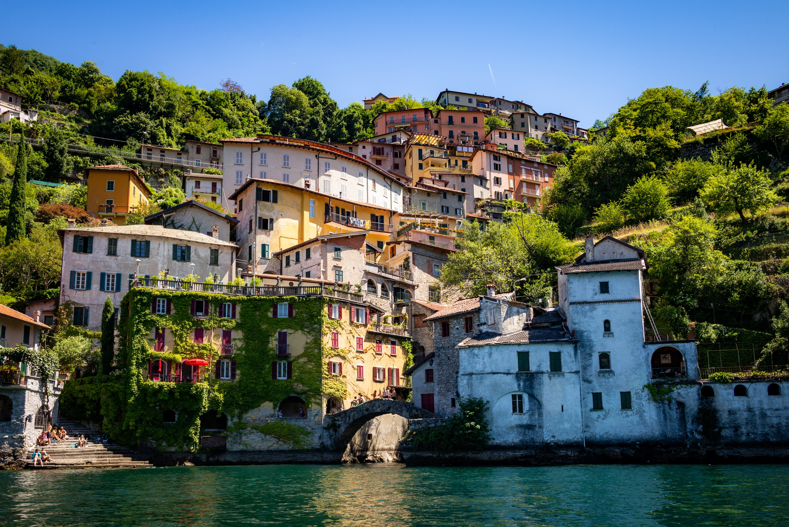
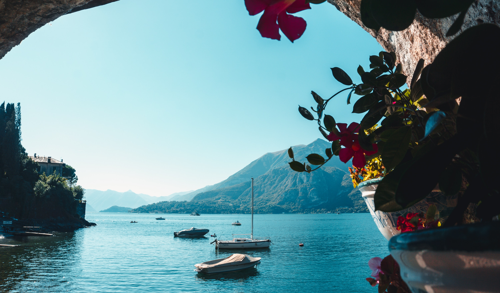

Como ist eine charmante Stadt am südwestlichen Ende des Comer Sees in Norditalien gelegen und bekannt für ihre historischen Gebäude, schöne Landschaften und lokale Küche. Die Stadt hat eine lange Geschichte und ist ein wichtiger Ausgangspunkt für Ausflüge in die umliegende Region, einschließlich des Comer Sees und der umliegenden Villen und Gärten.

Como ist ein wunderschöner Ort, der viele Aktivitäten und Sehenswürdigkeiten bietet. Besucher können die historischen Gebäude der Stadt bewundern, wie die beeindruckende Kathedrale von Como oder die Kirche Sant'Abbondio. Eine Fahrt auf dem Comer See bietet eine atemberaubende Aussicht auf die umliegende Landschaft und ermöglicht es, den See auf verschiedene Arten zu erleben.

Die Menschen in Como sind im Allgemeinen sehr freundlich und gastfreundlich. Als touristisches Ziel begrüßen sie Besucher aus der ganzen Welt und sind daran gewöhnt, mit Touristen umzugehen. Viele Einwohner sprechen Italienisch, aber auch Englisch wird häufig gesprochen. Die lokale Bevölkerung ist stolz auf ihre Stadt und ihre Geschichte und hilft Besuchern gerne bei Fragen oder Anliegen weiter.